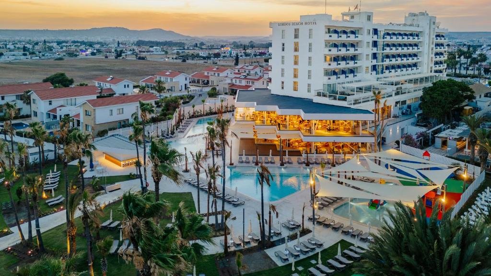
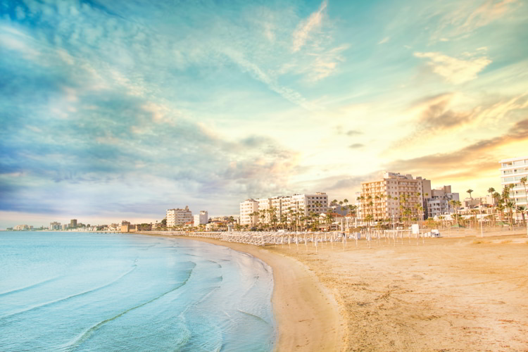
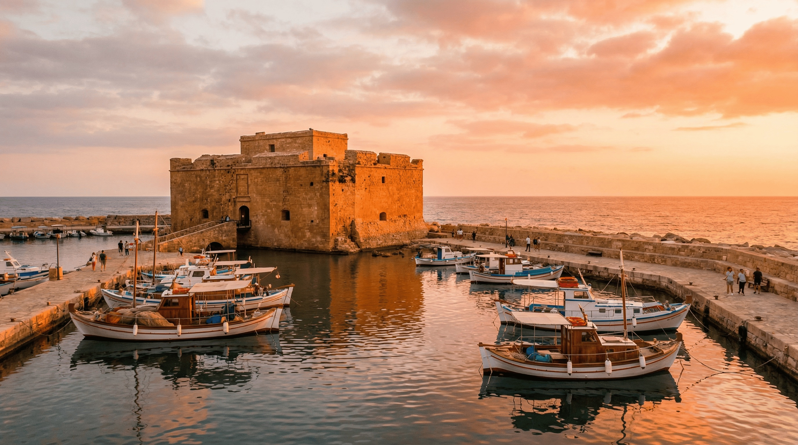
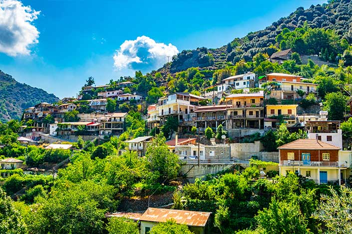
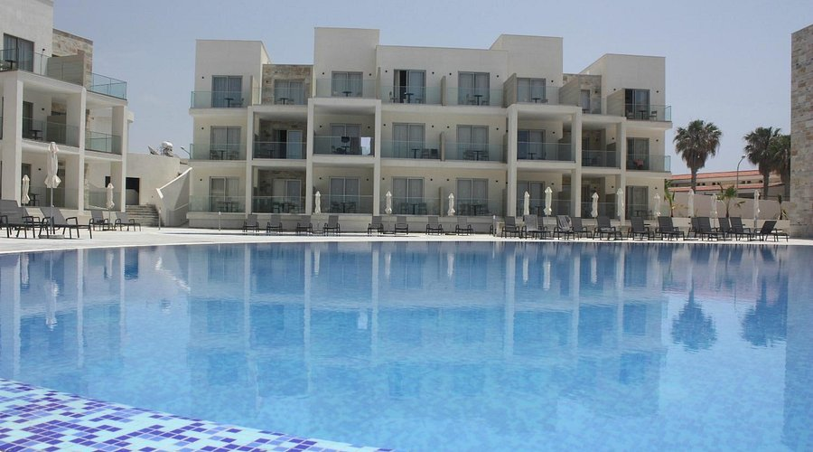
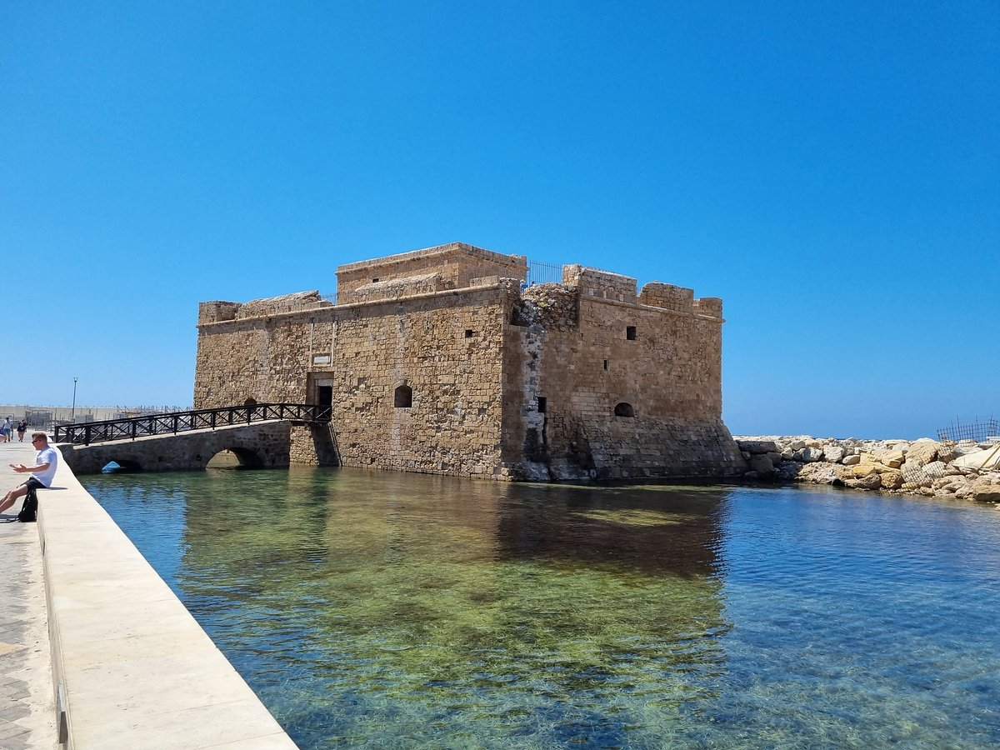
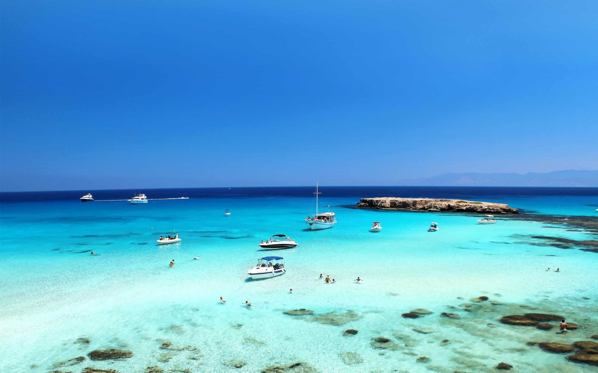
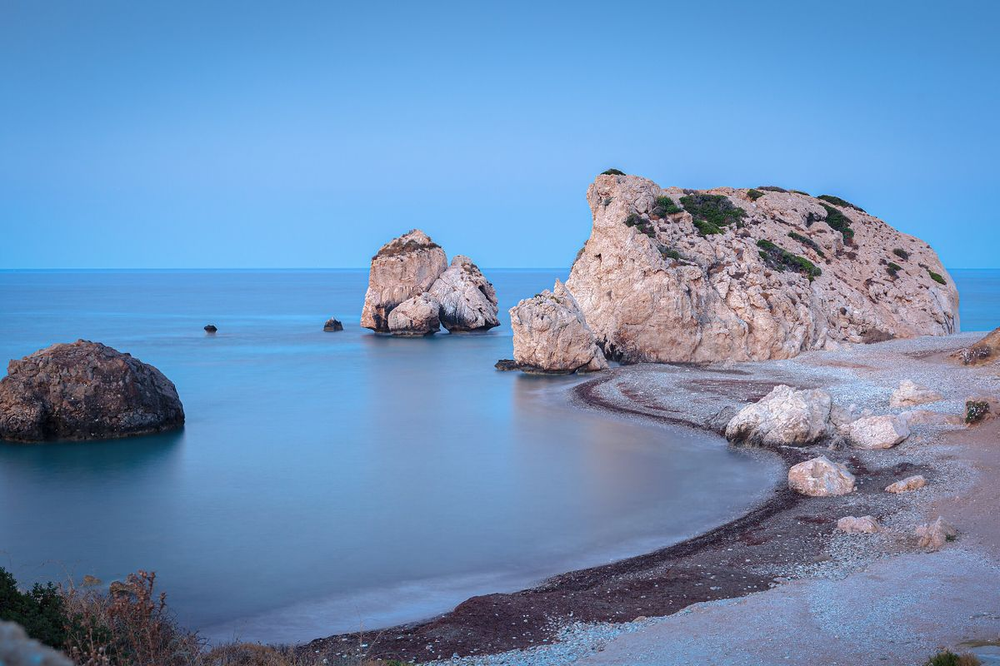
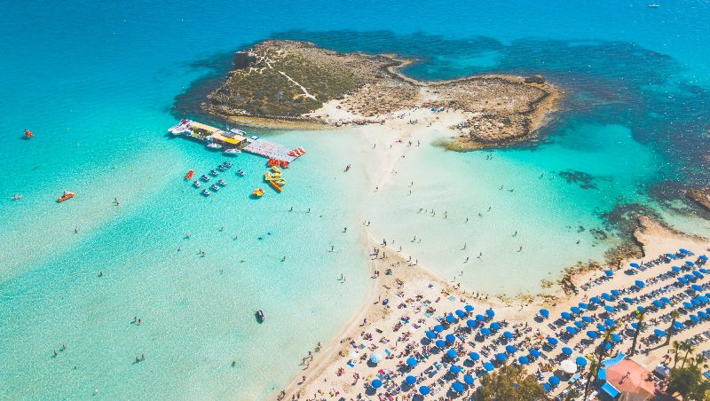

Freitag – Anreise nach Larnaca
26. Dezember 2025Abflug Wien (VIE)
Austrian Airlines OS 795, direkt nach Larnaca (LCA).
FlugAnkunft Larnaca (LCA)
Boxing Day – die meisten Geschäfte und Museen sind geschlossen.
AnkunftMietwagen abholen
Automatik empfohlen – Linksverkehr!
Mietwagen
Check-in Lordos Beach Hotel
4 Nächte in Larnaca, Premium Superior Side Sea View Room.
HotelSamstag – Larnaca entdecken
27. Dezember 2025
Finikoudes Beach & Promenade
Entspannter Strandspaziergang entlang der Palmenpromenade.
StrandSt. Lazarus Kirche & Altstadt
Byzantinische Kirche und gemütliche Altstadtgassen.
KulturMeze im To Kazani
Traditionelles zypriotisches Meze in Aradippou.
DinnerSonntag – Flamingos & Salzsee
28. Dezember 2025Larnaca Salt Lake
Flamingos beobachten am Salzsee – ein Winterhighlight.
NaturHala Sultan Tekke
Wichtiger islamischer Wallfahrtsort am Salzsee.
Kultur
Fisch-Meze in Larnaca
Psarolimano Fish Tavern am Mackenzie-Hafen.
DinnerMontag – Troodos & Weinberge
29. Dezember 2025
Troodos-Gebirge
Ausflug ins Gebirge, malerische Dörfer und Weinberge.
NaturMilitzis
Zypriotische Klassiker wie Sheftalia im Stadtzentrum von Larnaca.
LunchDienstag – Transfer nach Paphos
30. Dezember 2025Kourion
Antike Stadt mit Theater und Mosaiken – UNESCO-Welterbe.
 UNESCO
UNESCO
Fahrt nach Paphos
Entlang der Küste, ca. 1,5 Stunden (132–135 km).
Auto
Check-in Amphora Hotel & Suites
3 Nächte in Paphos, Suite mit Meerblick.
HotelMittwoch – Silvester in Paphos
31. Dezember 2025
Paphos Archäologischer Park
Römische Mosaiken und antike Ausgrabungen – UNESCO-Welterbe.
UNESCOPaphos Hafen
Gemütlicher Spaziergang, Geschäfte schließen früh (ca. 18:00).
StadtSilvester-Dinner
ALMAR Seafood Bar – Ceviche und gegrillter Oktopus am Strand.
Silvester ReservierungDonnerstag – Entspannungstag
1. Januar 2026
Blue Lagoon & Akamas
1. Januar: fast alles geschlossen – perfekt für Natur & Strand.
Natur
Aphrodite's Rock
Der Geburtsort der Göttin Aphrodite an der Südküste.
SightseeingFreitag – Abreise
2. Januar 2026
Letzter Strandbesuch
Entspannter Vormittag am Strand von Paphos.
StrandRückflug Larnaca (LCA)
Austrian Airlines OS 796 zurück nach Wien (VIE).
FlugAnkunft Wien (VIE)
Ende eines wunderschönen Urlaubs. Καλή Χρονιά!
AnkunftUnsere Unterkünfte
Zwei wunderschöne Hotels am Mittelmeer.
Lordos Beach Hotel
4 Nächte · Larnaca
Amphora Hotel & Suites
3 Nächte · Paphos
Restaurant-Empfehlungen
Die besten Lokale für authentische zypriotische Küche.
To Kazani
Aradippou · Meze
Psarolimano Fish Tavern
Mackenzie-Hafen · Meeresfrüchte
Militzis
Stadtzentrum Larnaca · Zypriotisch
ALMAR Seafood Bar
Paphos · Meeresfrüchte
Praktische Informationen
Flugdetails
Hinflug: OS 795, Fr. 26.12.2025, 12:30 Wien (VIE) → 16:35 Larnaca (LCA)
Rückflug: OS 796, Fr. 02.01.2026, 17:25 Larnaca (LCA) → 19:50 Wien (VIE)
Flugzeug: Airbus A321 · Economy Light · Buchungsnummer: 7EAS8X
Mietwagen & Fahren
🚗 Linksverkehr! Britisches System, Automatik empfohlen.
Autobahn: 100 km/h, kostenlos · Landstraßen: 80 km/h · Ortschaften: 50 km/h
Promillegrenze: 0,5 · Benzin: ca. €1,28–1,35/Liter
Packliste
Steckdosenadapter Typ G
Britische 3-polige Steckdosen
Mehrere Schichten Kleidung
17–19°C tagsüber, 8–10°C nachts
Leichte Regenjacke
7–12 Regentage im Dezember
Fernglas
Für Flamingos am Salzsee
Mini-Sprachführer
Yiasas = Hallo · Efcharisto = Danke · Parakalo = Bitte/Gern
Kalimera = Guten Morgen · Kalispera = Guten Abend
Nero = Wasser · Logariasmo = Rechnung · Ne / Ochi = Ja / Nein
Notfall
Notruf: 112 oder 199
Österr. Botschaft: +357 22 410151
Sperr-Notruf: +43 1 20900
Polizei: 1460 · Tourismus Paphos: +357 26 932 841